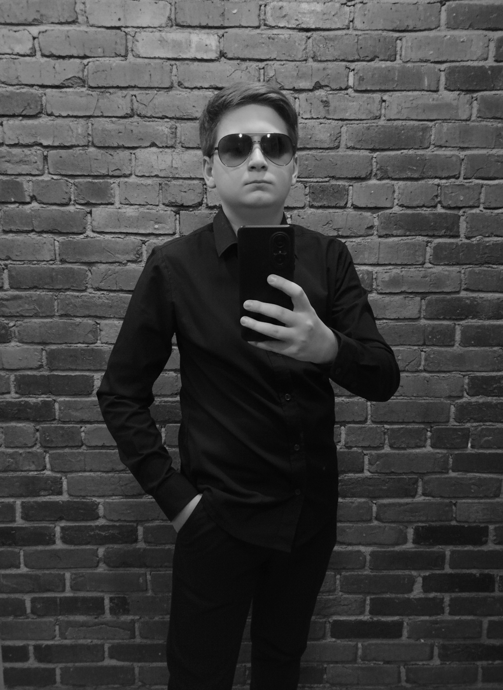
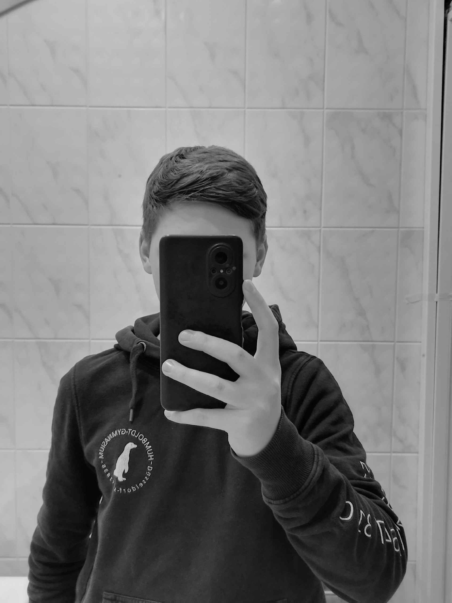
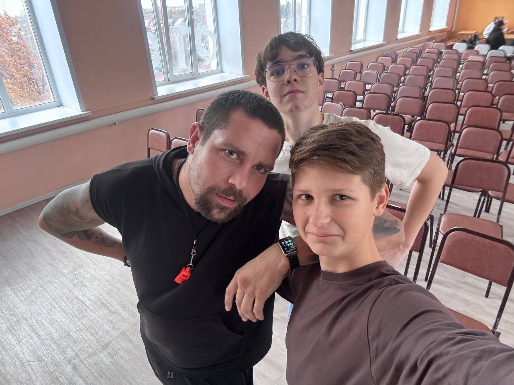

Я — Глеб, омский блогер. Веду личный блог, в котором рассказываю о своей жизни: учёбе, занятиях спортом и повседневных делах. Делюсь тем, что происходит со мной на самом деле, без прикрас и лишнего пафоса.
Я совмещаю учёбу, тренировки и работу над контентом — и стараюсь делать это последовательно. Мой блог отражает мой распорядок и мои интересы: то, чему я учусь, и то, чем занимаюсь вне учёбы.
Подписывайтесь на мои соцсети — там много интересного.


